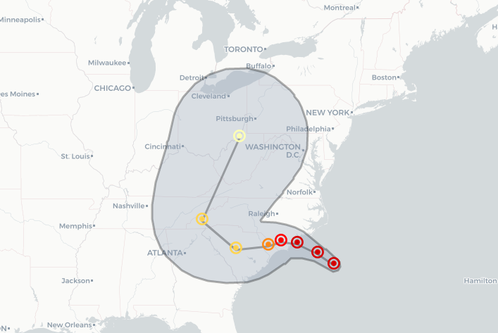

Progress Map of Hurricane Florence
A map, using Leaflet.js and QGIS, of a progress map of Hurricane Florence. I learned how to create a GeoJson via QGIS and to integrate it with the map to showcase the location of the hurricane and the category it will be when it makes landfall.
Story: ‘Catastrophic’ freshwater flooding expected over Carolinas
Role: Digital Designer and Developer
Tools: HTML, CSS, Javascript (Leaflet.js), QGIS